HPA Axis / Cortisol
Hypothalamus → CRH → Pituitary → ACTH → Adrenal Cortex → Cortisol
A&S NEURO SKINCARE RESEARCH
A&S Explores Neuro Skincare Through One Question: How Does the Personal Exposome Shape Biology Through the Skin and Senses?
The skin is a vital interface where environmental factors, stress, scent, touch and lifestyle interact with the body through sensory receptors, neural pathways and cellular signaling.
By integrating Exposome, Sensory, Olfactory and Neural Pathway research with Bio-Responsive Ingredients, A&S studies how the skin senses, responds and adapts to external stimuli.
Personal Exposome Stressors Activate Central Stress Pathways, Initiating Neuro-Immune-Endocrine Signaling That Alters Cellular Responses and Disrupts Skin Homeostasis.
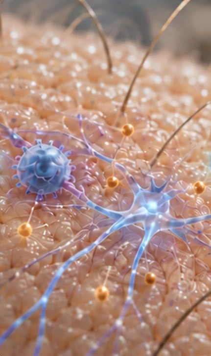
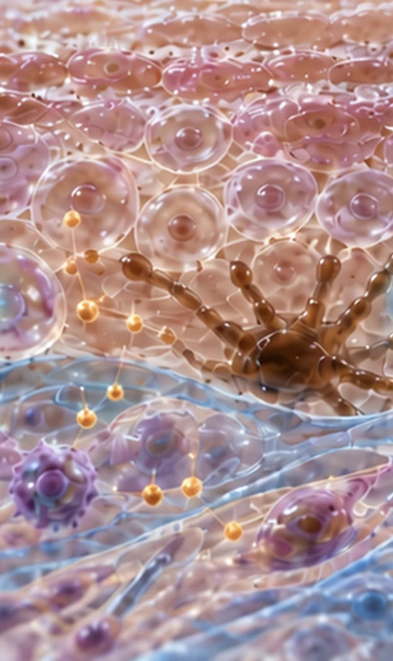
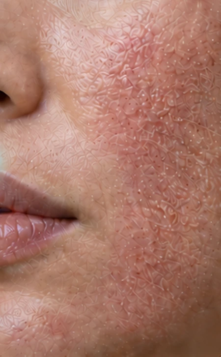
How Personal Exposome Stressors Are Translated into Biological Signals
Personal exposome stressors activate coordinated neural, endocrine and neuroimmune pathways that transmit stress signals throughout the body and toward the skin.
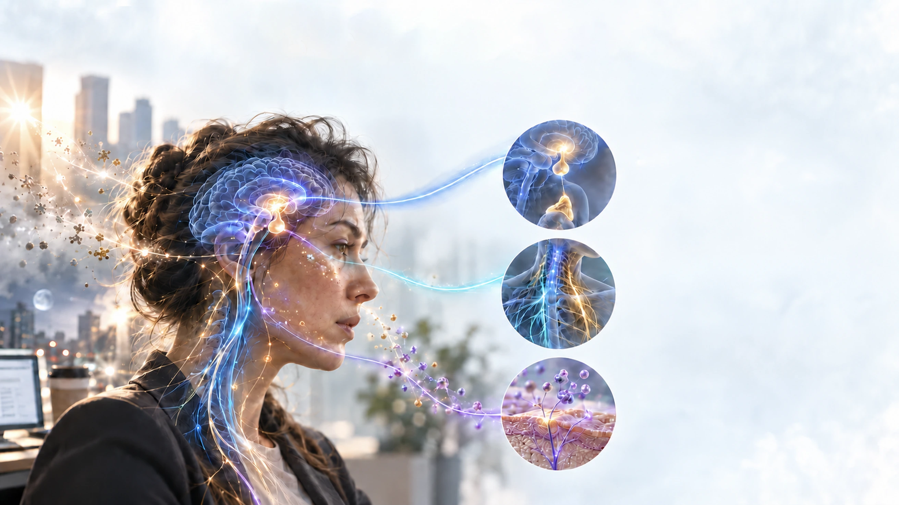
Hypothalamus → CRH → Pituitary → ACTH → Adrenal Cortex → Cortisol
Sympathetic Activation · Parasympathetic Modulation
Substance P · CGRP · VIP · NPY
Where Neural, Immune and Endocrine Signals Converge in the Skin
The skin functions as an integrated signaling network in which sensory nerves, immune cells and local endocrine pathways continuously communicate and respond to stress.
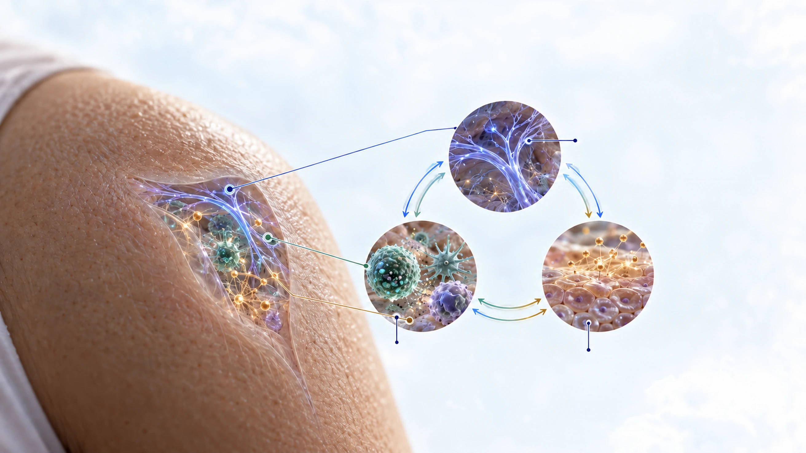
Sensory Receptors · Nerve Fibers · Neuropeptides
Mast Cells · Macrophages · Dendritic Cells · Cytokines
Local HPA-like Axis · CRH · ACTH-like Peptides · Cortisol
How Stress Signaling Alters Skin Cell Behavior
Neural, immune and endocrine stress signals reshape the behavior of multiple skin cell populations, progressively weakening the coordinated functions that maintain skin homeostasis.
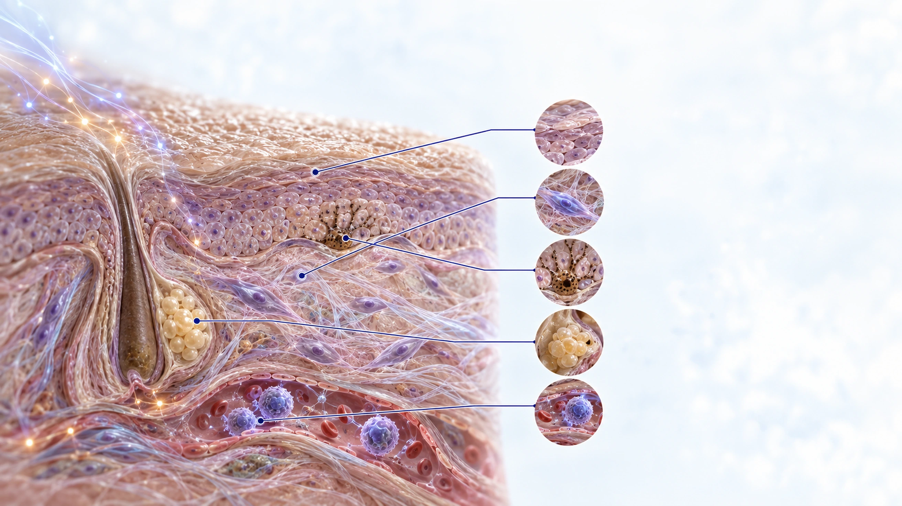
Impaired Differentiation · Reduced Barrier Renewal
Collagen & Elastin ↓ · MMP Activity ↑
Altered Pigmentation Signaling
Altered Sebum Production · Increased Oxidation
Inflammation ↑ · Vascular Reactivity ↑
A CONTINUOUS FEEDBACK LOOP
The brain and skin communicate continuously through neural, endocrine and immune signals.
Stress-related signals from the central nervous system influence skin responses,
while sensory and inflammatory signals generated in the skin return to the brain.
This bidirectional feedback may maintain homeostasis—or contribute to its disruption
when stress becomes prolonged.
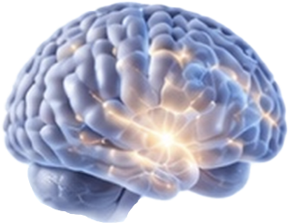
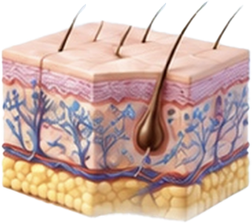
SKINSCIENCE
FOR HEALTHY SKIN
TODAY AND TOMORROW
A&S INTEGRATED RESEARCH FRAMEWORK
An integrated systems model mapping bidirectional communication across the brain–skin axis.
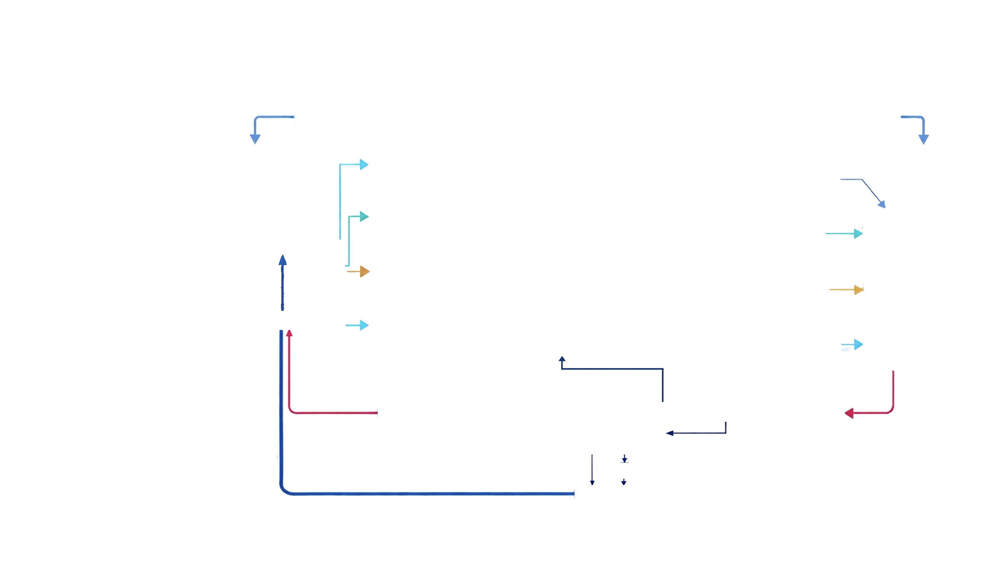
Environmental | Psychological | Lifestyle | Physical
Activates central and peripheral
stress response systems
Central processing
and stress integration
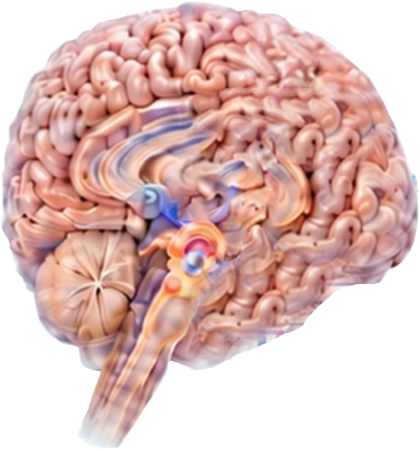
Dopamine
Serotonin
Oxytocin
Glutamate
GABA
Emotion
Stress response
Neuroendocrine regulation
Peripheral response
and homeostasis
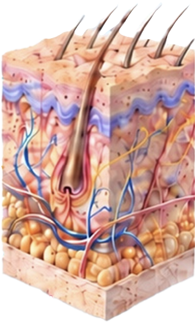
Barrier function
Pigmentation
Immune regulation
Sensory signaling
Neuron, Mast cells,
NK cells, Neutrophils
Histamine
Substance P (SP)
Inflammatory cytokines
Acetylcholine (ACh) increase
Cutaneous POMC connects to α-MSH in the pigmentation pathway. Cutaneous CRH signals through the neuroimmune cells shown here, via histamine and directly to Substance P, which feeds back to the brain.
External and internal stressors act directly on skin cells, initiating molecular signals that progressively reshape skin function and appearance.
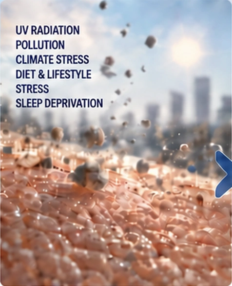
Keratinocytes · Fibroblasts ·
Mast Cells · Sensory Nerve Endings ·
Melanocytes · Immune Cells
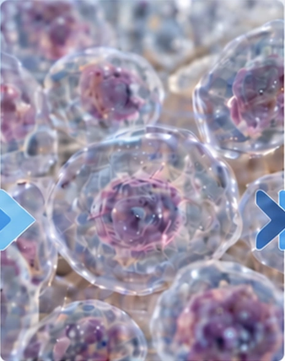
NF-κB · MAPK · JAK/STAT ·
NLRP3 · ROS · Ca2+
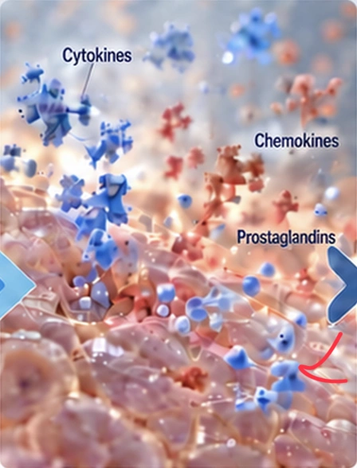
Cytokines · Chemokines ·
Neuropeptides · MMPs ·
Histamine · Prostaglandins
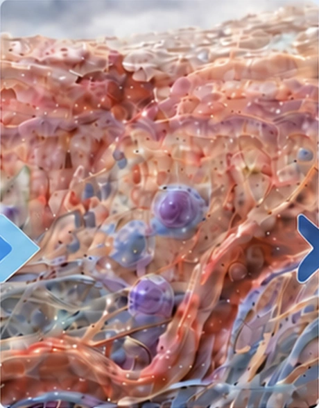
Barrier Damage · Inflammation ·
Oxidative Stress · ECM Breakdown ·
Vascular Imbalance ·
Microbiome Dysbiosis
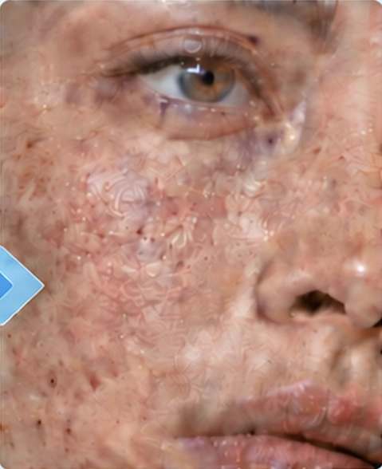
Dryness · Sensitivity · Itching ·
Acne · Dermatitis · Pigmentation ·
Delayed Healing · Skin Aging
Science of Brain–Skin Communication
Drawing on our understanding of the exposome, the skin–brain axis and skin barrier biology, A&S explores
how scientific communication between skin and brain can be translated into neurocosmetic strategies.
Specific ligands bind to
neuronal receptors on skin cells,
initiating a signal.
Binding triggers an intracellular
cascade, converting the external
signal into an internal response.
The signal leads to positive cellular
changes like increased collagen
production, improved hydration, and
enhanced barrier function.
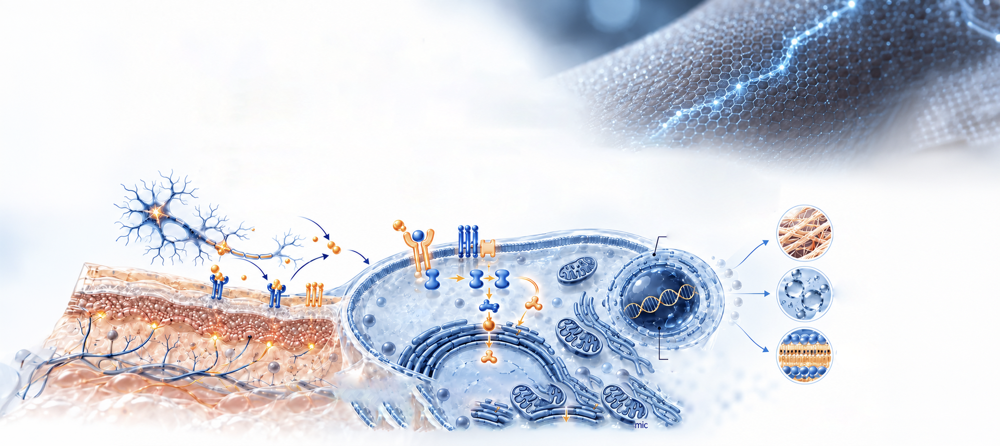
Skin cell Nucleus Endoplasmic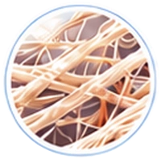
Collagen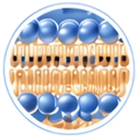
Enhanced